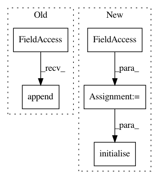

c25036261ee9d9e9c79099b4e7938d591cbda7b5,niftynet/contrib/regression_weighted_sampler/isample_regression.py,ISampleRegression,initialise_dataset_loader,#ISampleRegression#Any#Any#Any#,39
Before Change
for file_list in file_lists:
reader = ImageReader(["image", "output"])
reader.initialise(data_param, task_param, file_list)
self.readers.append(reader)
mean_var_normaliser = MeanVarNormalisationLayer(image_name="image")
histogram_normaliser = None
if self.net_param.histogram_ref_file:
After Change
return
try:
reader_phase = self.action_param.dataset_to_infer
except AttributeError:
reader_phase = None
file_lists = data_partitioner.get_file_lists_by(
phase=reader_phase, action=self.action)
// modifying the original readers in regression application
// as we need ground truth labels to generate error maps
self.readers = [
ImageReader(["image", "output"]).initialise(
data_param, task_param, file_list) for file_list in file_lists]
mean_var_normaliser = MeanVarNormalisationLayer(image_name="image")
histogram_normaliser = None
In pattern: SUPERPATTERN
Frequency: 3
Non-data size: 5
Instances
Project Name: NifTK/NiftyNet
Commit Name: c25036261ee9d9e9c79099b4e7938d591cbda7b5
Time: 2018-05-27
Author: wenqi.li@ucl.ac.uk
File Name: niftynet/contrib/regression_weighted_sampler/isample_regression.py
Class Name: ISampleRegression
Method Name: initialise_dataset_loader
Project Name: NifTK/NiftyNet
Commit Name: 83f6726852bd539c427523bf4bf35f07b0744014
Time: 2017-11-14
Author: wenqi.li@ucl.ac.uk
File Name: niftynet/application/regression_application.py
Class Name: RegressionApplication
Method Name: initialise_dataset_loader
Project Name: NifTK/NiftyNet
Commit Name: 9943f36fd3cf218775b735ddd41e2939487c0e0f
Time: 2017-11-14
Author: wenqi.li@ucl.ac.uk
File Name: niftynet/application/gan_application.py
Class Name: GANApplication
Method Name: initialise_dataset_loader